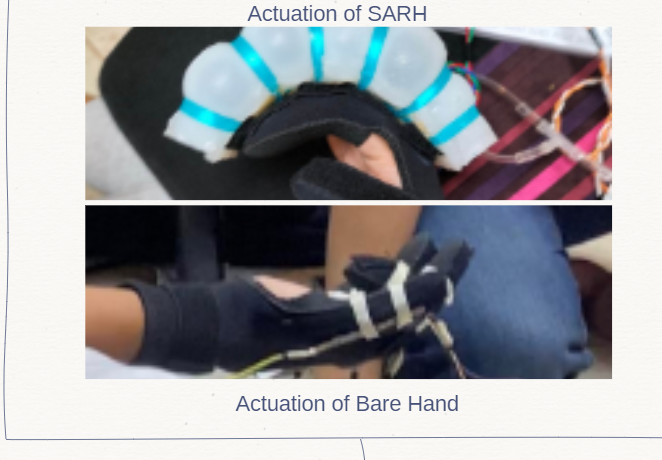
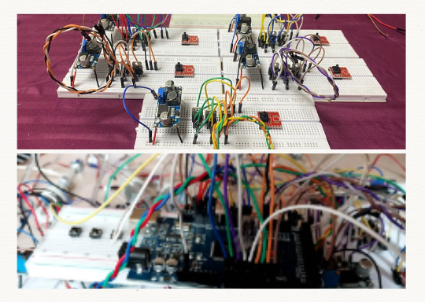

This is the SARH project website. This website demonstrates a soft actuated robotic hand designed for precision, adaptability, and innovation in soft robotics particularly in the field of medicine.

